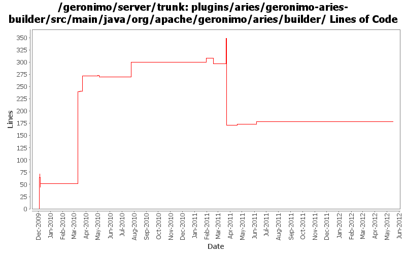

[root]/plugins/aries/geronimo-aries-builder/src/main/java/org/apache/geronimo/aries/builder

| Author | Changes | Lines of Code | Lines per Change |
|---|---|---|---|
| Totals | 58 (100.0%) | 802 (100.0%) | 13.8 |
| gawor | 37 (63.8%) | 656 (81.8%) | 17.7 |
| xuhaihong | 3 (5.2%) | 72 (9.0%) | 24.0 |
| rwonly | 9 (15.5%) | 62 (7.7%) | 6.8 |
| djencks | 2 (3.4%) | 7 (0.9%) | 3.5 |
| genspring | 3 (5.2%) | 4 (0.5%) | 1.3 |
| jbohn | 1 (1.7%) | 1 (0.1%) | 1.0 |
| xiaming | 1 (1.7%) | 0 (0.0%) | 0.0 |
| rickmcguire | 2 (3.4%) | 0 (0.0%) | 0.0 |
Merge 1333350,1333352,1334031,1334300,GERONIMO-6345,GERONIMO-6348 into trunk
0 lines of code changed in 1 file:
GERONIMO-5996: Development mode for Aries applications - allow applications to be re-resolved each time they are started
6 lines of code changed in 1 file:
GERONIMO-5918: Resolve unresolved application only
6 lines of code changed in 1 file:
refact geronimo aries plugin structure
1 lines of code changed in 7 files:
GERONIMO-5861 Update a bundle within an EBA (throw IllegalArgumentException in update method)
6 lines of code changed in 1 file:
GERONIMO-5861 Update a bundle within an EBA
55 lines of code changed in 1 file:
Replace hard code EBA group id "application" with a CONSTANT.
1 lines of code changed in 1 file:
GERONIMO-5769 use OSGi API to operate WAB in portlet, suggestion from Jarek.
2 lines of code changed in 1 file:
GERONIMO-5797 Add defaultEnvironment support for eba config builder
70 lines of code changed in 2 files:
GERONIMO-5571 Console support for EBA modules:list EBA modules,start EBA modules,stop EBA modules and uninstall EBA moules.
1 lines of code changed in 1 file:
GERONIMO-5555 - Correct application version processing for deployed EBAs
1 lines of code changed in 1 file:
switch to obr resolver from apache aries
92 lines of code changed in 1 file:
copy legal files from 3.0-M1 release as a base and backport mini-server pom changes
0 lines of code changed in 1 file:
merge in header file changes from M1
0 lines of code changed in 1 file:
GERONIMO-5285: Update some of the aries application code so that it works better with the standard deploy/undeploy/start/stop operations
60 lines of code changed in 3 files:
check if qualifier is an empty string
3 lines of code changed in 1 file:
XBEAN-148 use new xbean-bundleutils
1 lines of code changed in 1 file:
GERONIMO-4971: Reimplement application start/stop
48 lines of code changed in 3 files:
GERONIMO-4971: Initial OBR integration for Aries Applications. Some of the OBR resolver code is based on the resolver in Apache Aries
13 lines of code changed in 3 files:
synch with latest aries code
14 lines of code changed in 5 files:
GERONIMO-4971: Much improved Aries application support along with Karaf shell commands for installing/uninstalling/starting/stopping/listing applications
239 lines of code changed in 9 files:
GERONIMO-4971 include obr repository.xml in every plugin, and install it into an obr instance when the plugin is installed. Also update the aries plugin and build it. The framework geronimo-obr module is written by Jarek Gawor with minor changes
6 lines of code changed in 1 file:
GERONIMO-5008 Create util methods for all the Geronimo components
2 lines of code changed in 1 file:
update the defailt artifact type
1 lines of code changed in 1 file:
GERONIMO-4971: install application bundles into the repository
51 lines of code changed in 2 files:
GERONIMO-4971: switch to ConfigurationBuilder instead of ModuleBuilder
44 lines of code changed in 2 files:
revert r887507 - will take a different route
0 lines of code changed in 1 file:
GERONIMO-4975: Simplify integrating new ModuleBuilders with EARConfigBuilder
7 lines of code changed in 1 file:
GERONIMO-4971: temporary code that installs aries application bundles
64 lines of code changed in 1 file:
GERONIMO-4971: basic structure for deployer for aries applications. The deployer communicates with Aries' ApplicationMetadataManager service to parse the application manifest
8 lines of code changed in 2 files: